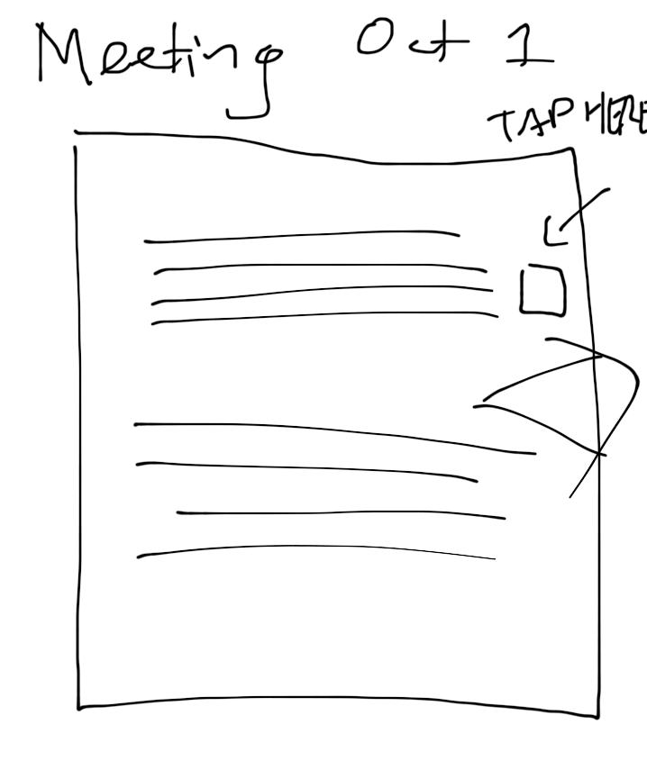
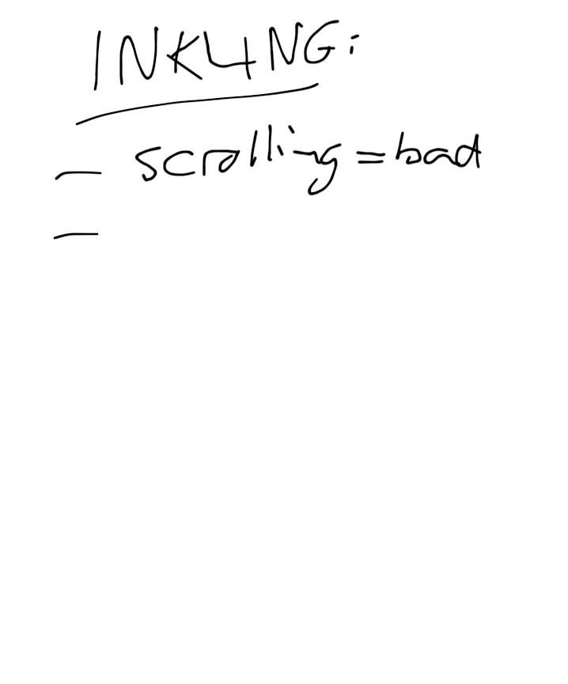
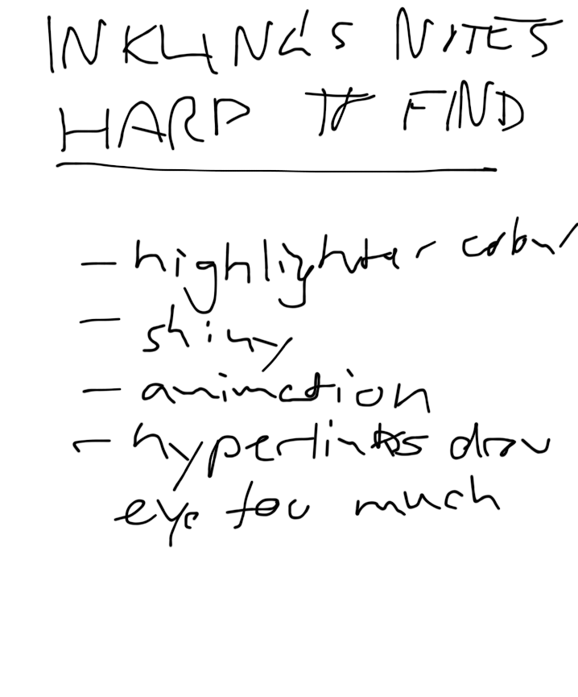
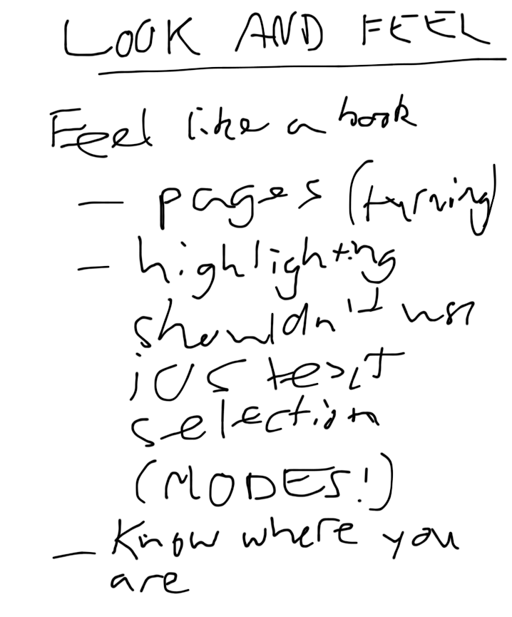
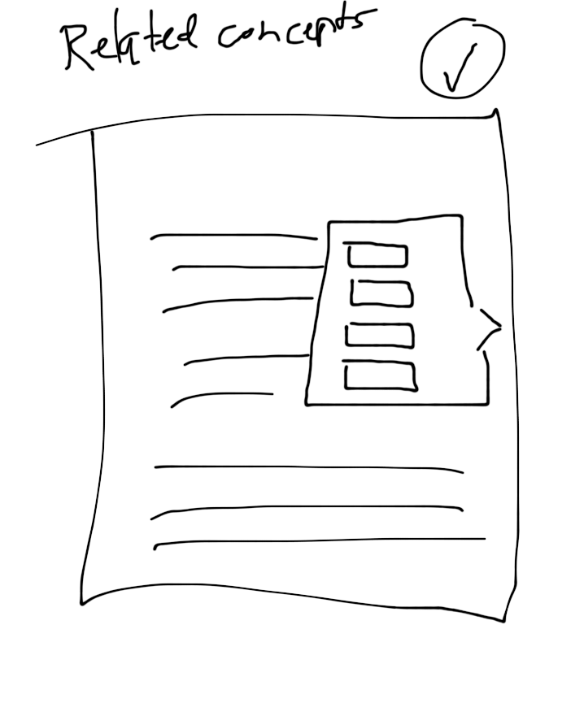
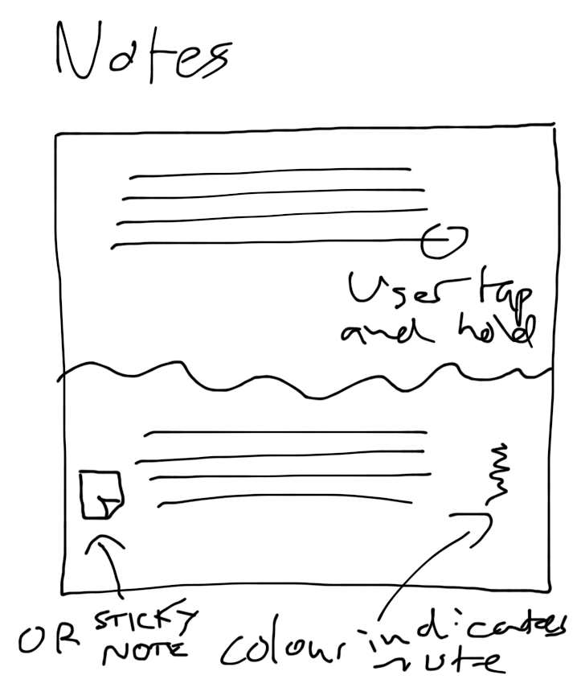
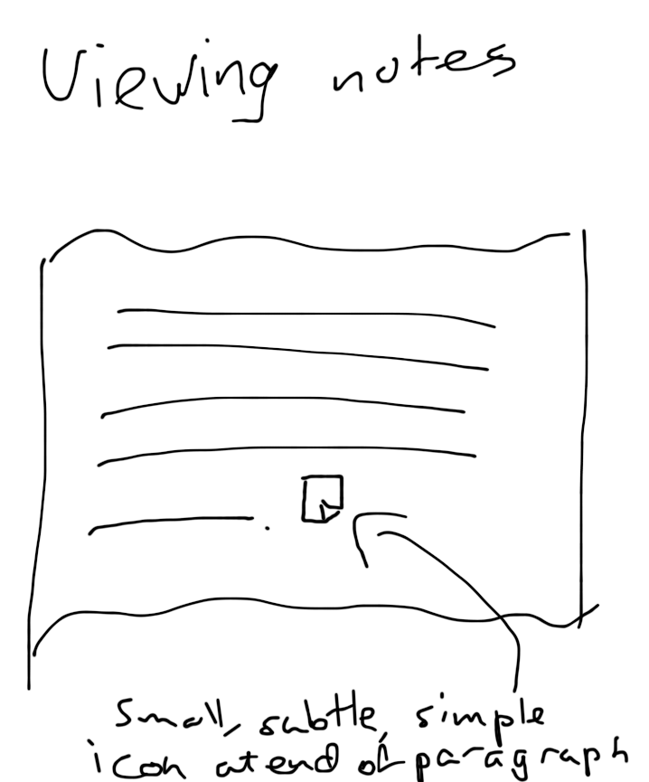
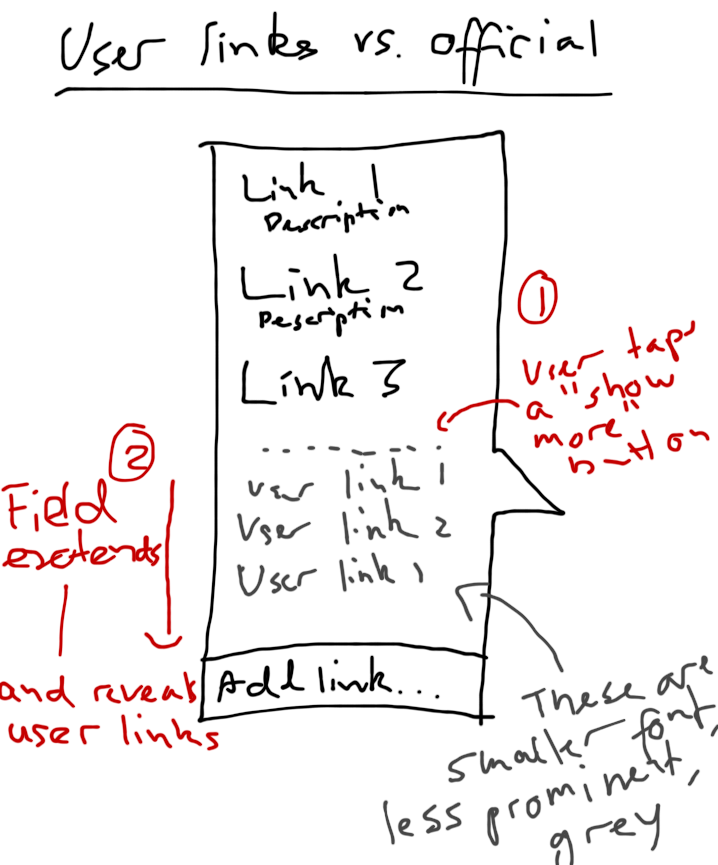
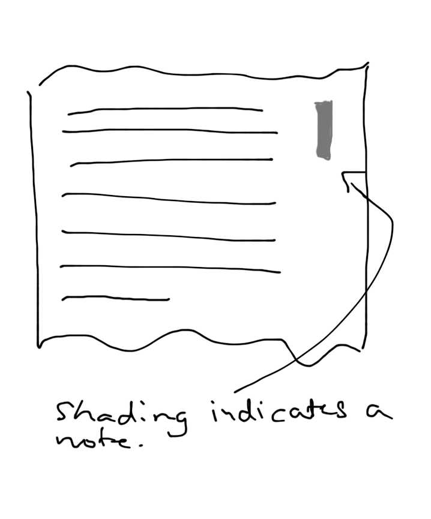
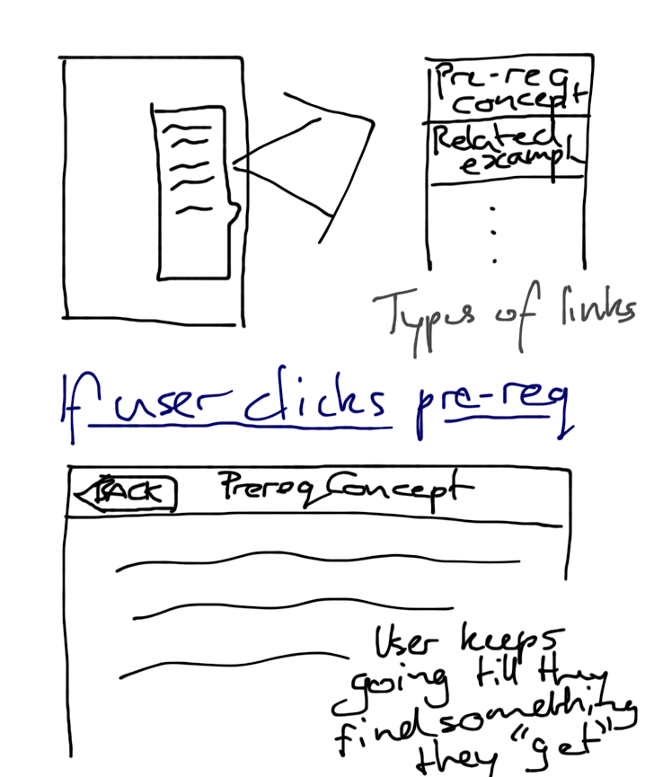

HCI Project
This phase
- Activity Design Brainstorming
- Activity List
- Activity Scenarios
- Activity Claims
- Information Design Brainstorming
- Information Design Scenarios
- Information Design Claims
- Representations
Representations
Links in the ebook reader will placed off to the side in order to keep them from distracting the user while reading.




Related concepts will be accessed through a pop-up menu off to the side of the page. Pop-ups will be brought up by tapping in the right margin.

The user will be able to create notes by tapping the page, a "sticky note" icon will appear in the margin near the annotated text to signify that there is a note.

The user can add notes by tapping a link icon in the right margin.

User notes are distinguished from content creator notes by hiding user created notes


If the user follows links to prerequisite concepts, they can continue to search until they find a concept they understand. At this stage, the user can then click the back button to re-read the things that she was struggling to learn.